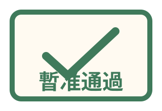
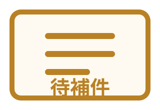
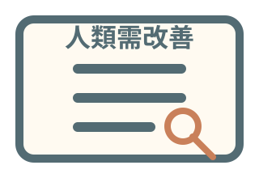

圓形園區章
適合 favicon、社群頭像、商品貼紙與印章中心圖。
品牌定型第一階段
先把「咖灰是誰」定型，再蓋園區。
本頁定義黃燈灰董事長主題樂園的基礎品牌系統：文字標誌、色彩、咖灰形象標準與正式印章語言。 後續首頁、園區地圖、事件簿、影像館與商品部都應依此延伸。

Logo System
目前先建立可用於網站、社群與商品預覽的文字標誌系統。正式向量 Logo 可依此方向製作。
適合 favicon、社群頭像、商品貼紙與印章中心圖。
適合網站 header、首頁 Hero、公告欄與對外品牌頁。

所有事件、互動結果與商品上架前，都可以用稽核章系統標示狀態。
Palette
色彩以莫蘭迪海邊辦公室為核心，避免過亮、塑膠感與兒童樂園色。
Chairman Standard
咖灰不是每次都重新生成的任意小鳥。他是品牌權力核心，形象必須穩定。
Stamp System
BBB 是正式「不通過章」，不是隨便的梗圖字樣。所有批示結果都應有狀態、文字與印章。





Next
依本頁標準，下一輪可以開始製作正式 Logo 向量版、favicon、社群頭像與印章 PNG/SVG。 網站結構則依藍圖拆出「園區地圖」「董事長檔案」「請示董事長」三個核心入口。